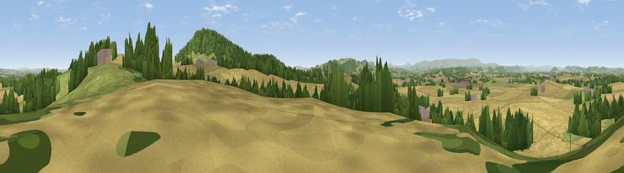

Viewpoint near Dewsall
#12363 in England · top 32% of its area beats it · near Dewsall · path 112 mWhere it is
The exact computed spot (SO 48875 33775). Click the marker for map links.
Public access: the nearest public right of way is about 112 m away — the final stretch may cross private land. Computed from Natural England's CRoW access layer and OpenStreetMap rights of way — not the legal definitive map. Always verify locally.
The view, rendered

A 360° render of this exact spot computed from the terrain model, tree cover and land cover — summer colours, afternoon light, calibrated against photographs of famous viewpoints. Real trees, hedges and buildings will differ in detail.
The panorama
Grey silhouette: terrain skyline in each direction (720 bearings, Earth curvature and refraction included). Dashed green: skyline with trees (+15 m) and buildings (+8 m) as obstacles. Blue strip: how far the ground is visible on each bearing.
Where the view opens
Wedge length = distance to the farthest visible ground on that bearing (vegetation-aware). Rings at 10, 25 and 50 km.
What fills the view
56% cropland · 26% grassland · 16% woodland · 2% built-up
Angular shares of the visible panorama (visual magnitude), not map area. Landscape diversity 0.45 (0–1 Shannon).
Key numbers
More beautiful places nearby
The staircase of upgrades: each row has a higher view potential than everything closer. Driving times are estimates from straight-line distance, calibrated against real road routing — check an actual route before setting out.
| Place | Direction | Drive | Score |
|---|---|---|---|
| Viewpoint near Callow | ENE · 0 km | ~2 min | 68.1 |
| Viewpoint near Callow | ESE · 1 km | ~4 min | 75.9 |
| Viewpoint near Aconbury | ESE · 2 km | ~5 min | 76.5 |
| Viewpoint near Orcop Hill | SSW · 5 km | ~12 min | 79.9 |
| Viewpoint near Orcop Hill | SSW · 6 km | ~13 min | 80.7 |
| Garway Hill | SSW · 10 km | ~20 min | 84.6 |
| Millennium Hill | ENE · 28 km | ~44 min | 86.9 |
| Worcestershire Beacon | ENE · 30 km | ~47 min | 87.1 |
52.00005, -2.74611 · source: screening · position refined by local search. Computed location — check access rights before visiting.